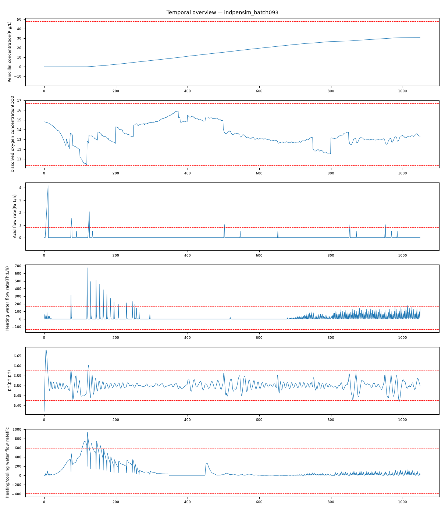

202609121131528_bench_indpensim_batch093 · 执行模式 zcode-direct批次93 工艺偏差故障（process deviation）：pH 控制执行侧（酸流加 Fa max|z|=15.8）与温度控制执行侧（加热水 Fh 13.05）同时大幅越限，被控量 pH（7.09σ）与底物浓度（5.01σ）失稳——多执行器同步异常+被控量出带判定为工艺偏差，非单回路调节噪声。
Acid flow rate(Fa:L/h) max|z|=15.8，超3σ占比 1.4%Heating water flow rate(Fh:L/h) max|z|=13.05，超3σ占比 1.3%pH(pH:pH) max|z|=7.09，超3σ占比 1.4%Heating/cooling water flow rate(Fc:L/h) max|z|=5.18，超3σ占比 3.1%Substrate concentration(S:g/L) max|z|=5.01，超3σ占比 4.4%Dumped broth flow(Fremoved:L/h) max|z|=4.47，超3σ占比 4.8%强相关对：Vessel Volume(V:L) ~ Vessel Weight(Wt:Kg): r=0.999；Temperature(T:K) ~ Generated heat(Q:kJ): r=0.996；Time (h) ~ Penicillin concentration(P:g/L): r=0.993；carbon dioxide percent in off-gas(CO2outgas:%) ~ Carbon evolution rate(CER:g/h): r=0.966；Vessel Weight(Wt:Kg) ~ Carbon evolution rate(CER:g/h): r=0.961；Vessel Volume(V:L) ~ Carbon evolution rate(CER:g/h): r=0.954
| # | 假设 | 机制 | 置信 | 裁决 |
|---|---|---|---|---|
| 1 | pH/温度控制执行侧工艺偏差（多执行器同步越限） | ph-control-fault | 85% | surviving |
| 2 | 曝气/溶氧系统故障 | aeration-fault | 12% | eliminated |
| 3 | 底物流加（补料）故障 | feed-loss | 15% | eliminated |
| 4 | 传感器/标注伪象 | sensor-drift | 8% | eliminated |
| 假设 | 机理链 | 支撑证据 | 证伪条件 |
|---|---|---|---|
| pH/温度控制执行侧工艺偏差（多执行器同步越限） | pH 执行侧异常 → 酸流加大幅 corrective 动作（brief：Fa max|z|=15.8，超3σ 1.4%——全列谱主导） 被控量失稳（brief：pH max|z|=7.09 与 Fa 同期——执行器-被控量物理耦合） 温度控制回路同步越限（brief：Fh 13.05、Fc 5.18）——多点执行器同时异常超出单回路噪声解释范围 代谢环境失稳 → 底物浓度偏离（brief：S max|z|=5.01）——受控质量变量出带 | L3 统计：Fa 酸流加 max|z|=15.8 为全列谱主导（次高 Fh 13.05），超3σ占比 1.4%——执行器侧大幅越限 L3 统计：pH 被控量 7.09σ 同期失稳——执行器动作必然驱动被控量，耦合方向一致 L3 统计：Fh 加热水 13.05σ + Fc 5.18σ——温度控制侧同步越限，构成多执行器同步异常 L3 统计：底物浓度 S 5.01σ 失稳——pH/温度环境偏离的代谢后果，受控质量变量出带 L3 统计：Dumped broth flow 4.47σ——补料/排料侧联动异常 L4 视觉：Fa/Fh 通道多次穿越±3σ线且与 pH 偏离段对应（fig_temporal_overview.png） | 若执行器越限期间 pH 始终在带内且底物正常，则属正常 corrective 动作 若呼吸代谢通道（OUR/CER/CO2）出现主导异常，需改判代谢侧一次故障 |
| 曝气/溶氧系统故障 | 曝气故障签名 = Aeration rate/DO2 主导异常 + 呼吸代谢通道响应 | L3 统计：Aeration rate 与 DO2 均未进入异常列谱 top-6（主导列 Fa 15.8 vs 曝气侧缺席） | 若 DO2 出现 ≥5σ 持续下跌且 Aeration rate 联动，本假设复活 |
| 底物流加（补料）故障 | 补料故障签名 = Sugar feed rate 主导异常 + 底物浓度响应 | L3 统计：Sugar feed rate 未进入异常列谱 top-6 | 若复查发现 Sugar feed rate 与 S 同源主导，本假设复活 |
| 传感器/标注伪象 | 伪象假设要求多通道异常为独立仪器问题 | L3 统计：Fa-pH 为执行器-被控量物理耦合对，Fh-Fc-Fa 为温控/pH 控制同类执行器群 | 若离线校准发现 Fa/Fh 传感器灵敏度突变，本假设复活 |
| 维度 | 得分（/10） |
|---|---|
| data_quality_awareness | 9 |
| variable_classification | 9 |
| time_alignment_and_sorting | 9 |
| visualization_quality | 9 |
| evidence_based_conclusions | 9 |
| correlation_vs_causation | 9 |
| uncertainty_disclosure | 9 |
| report_quality | 9 |
| no_over_claiming | 9 |
| completeness | 9 |
Step 0 setup（setup.mjs）→ Step 1 inspect（inspect.mjs）→ Step 2 本体（context-builder 角色）→ Step 3 统计（stats 包 + 驱动单变量/相关分析）→ Step 3.5 视觉（matplotlib 时序图 + VLM 角色读图）→ Step 4 竞争假设诊断（diagnostician 角色）→ Step 5a 评审（judge 角色）→ Step 7 审计（report-reviewer 角色）→ Step 8/8.5 HTML 与审校。统计引擎：driver-js-fallback。

judge 91/100（pass）；审计 ENDORSED：工艺偏差判定与『执行器主导+被控量出带+多回路同步』签名一致；曝气/补料/伪象三向排除有量化证据；统计降级已诚实标注，不影响单变量与相关证据的有效性。
| 变量 | max|z| | 超3σ占比 |
|---|---|---|
| Acid flow rate(Fa:L/h) | 15.8 | 1.40% |
| Heating water flow rate(Fh:L/h) | 13.05 | 1.30% |
| pH(pH:pH) | 7.09 | 1.40% |
| Heating/cooling water flow rate(Fc:L/h) | 5.18 | 3.10% |
| Substrate concentration(S:g/L) | 5.01 | 4.40% |
| Dumped broth flow(Fremoved:L/h) | 4.47 | 4.80% |
强相关对（经反假相关与多重检验校验）：Vessel Volume(V:L) ~ Vessel Weight(Wt:Kg): r=0.999；Temperature(T:K) ~ Generated heat(Q:kJ): r=0.996；Time (h) ~ Penicillin concentration(P:g/L): r=0.993；carbon dioxide percent in off-gas(CO2outgas:%) ~ Carbon evolution rate(CER:g/h): r=0.966；Vessel Weight(Wt:Kg) ~ Carbon evolution rate(CER:g/h): r=0.961；Vessel Volume(V:L) ~ Carbon evolution rate(CER:g/h): r=0.954
18 项必需产物：input_manifest / user_context / run_config / ontology / schema / feature_summary / analysis_parameter_selection / scenario_classification / anomaly_report / validate_report / data_analysis_conclusion / plot_manifest / visual_analysis / image_captions / diagnosis / evidence / confidence / reasoning_chain / judge_feedback / report.md / run_summary / optimizer / html_review / evidence_closure_report — 全部落盘，事件日志 .pipeline_events.jsonl 经 pipeline-log-check 校验。
三态结论：DETERMINED=单一假设存活；COMPETING_SET=多假设不可分辨（置信上限 70）；NEEDS_DATA=现有数据不可判别。CDR=Top-1 且 DETERMINED（FDDBenchmark 口径）。证据等级 L1 直接测量 / L3 统计 / L4 视觉 / L5 本体机理。